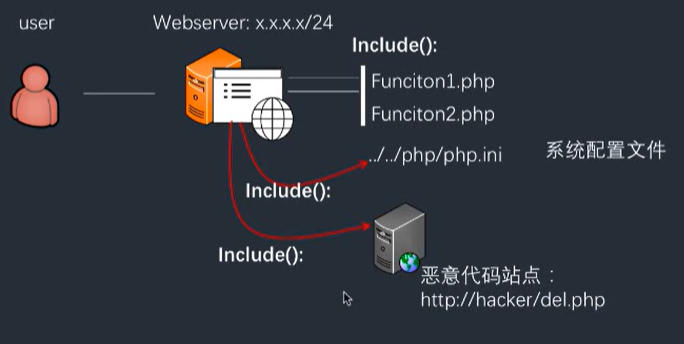
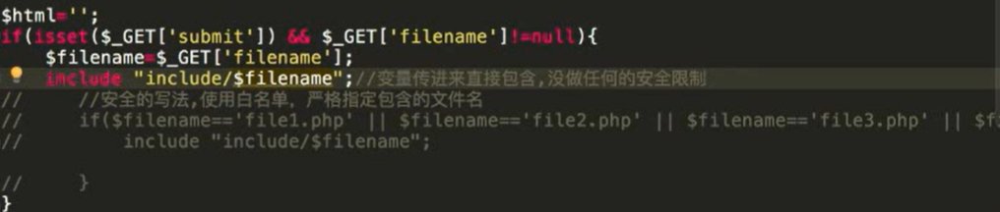

文件包含漏洞
在web后台开发中，程序员为了提高效率以及让代码看起来更加简洁，会使用“包含”函数功能[比如把一系列功能函数都写进fuction.php中，当某个文件需要调用的时候就直接在文件头写上一句就可以调用函数代码] 但有些时候，因为网站功能需求，会让前端用户选择需要包含的文件/在前端的功能中使用了“包含”功能，又由于开发人员没有对要包含的这个文件进行安全考虑，就导致攻击着可以通过修改包含文件的位置来让后台执行任意文件(代码)。 文件包含漏洞有“本地文件包含漏洞”和“远程文件包含漏洞”两种情况。

- 包含函数
include()或require()语句，可以将PHP文件的内容插入另一个PHP 文件(在服务器执行它之前)
| require | 会生成致命错误(E_COMPILE_ERROR)并停止脚本 |
|---|---|
| include | 只生成警告(E_WARNING)，并且脚本会继续[不管前面有没有错，后面有正确的就执行] |
> http://127.0.0.1/pikachu/vul/fileinclude/fi_local.php?filename=file2.php&submit=%E6%8F%90%E4%BA%A4
>
> http://127.0.0.1/pikachu/vul/fileinclude/fi_local.php?filename=../../../../../etc/passwd&submit=%E6%8F%90%E4%BA%A4

远程文件包含漏洞
- 前提
如果使用include、require，则需要php.in配置：
allow_url_fopen = on//默认打开
allow_url_include=on//默认关闭
http://127.0.0.1/pikachu/vul/fileinclude/fi_remote.php?filename=include%2Ffile2.php&submit=%E6%8F%90%E4%BA%A4
文件包含漏洞防范
- 功能设计尽量不要将文件包含函数对应文件放给前端选择、操作
- 过滤各种../../ http:// https://
- 配置php.ini配置文件：
allow_url_fopen = off
allow_url_include = off
magic_quotes_gpc=on //gpc在
- 通过白名单策略，仅允许包含运行指定的文件，其他都禁止